Certifications
Microsoft Azure Certifications
 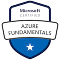
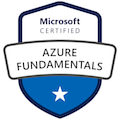
Oracle Cloud Certifications
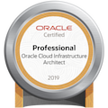 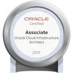 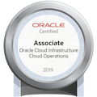 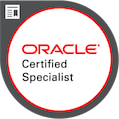Google Cloud Certifications
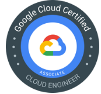Alibaba Cloud Certifications

 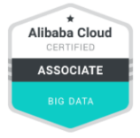 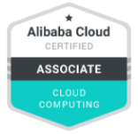 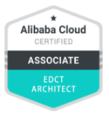
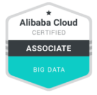 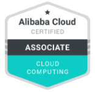 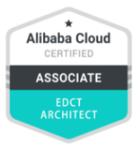
Work
Refinitiv, An LSEG business
Technical Implementation Specialist • March 2019 - Present
Thomson Reuters
Senior Software Engineer • October 2018 - February 2019
Pacific Satellite
VMware NSX Channel Systems Engineer • September 2016 - September 2018
AT&T Research Labs - Seattle, Washington
Senior Virtualization Engineer – Mobility based virtual infrastructure. • August 2014 - August 2016
AT&T Headquater Labs, New Jersey
Network Virtualization Engineer • December 2012 - July 2014